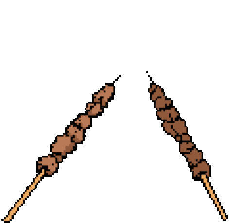

While creating this recipe page, I preferred to provide recipes that belong to my own culture and history.
I also wanted to offer you the opportunity to learn about my heritage and culture.
Step into the enchanting world of Ottoman cuisine and Turkish culture as we invite you to discover a realm of delectable recipes.
Prepare yourself for a culinary journey that celebrates the rich flavors and traditions of the Ottoman Empire.
TO OTTOMAN KITCHEN!
Or Instantly Visit Recipes
Karniyarik Recipe
Patlican Salad Recipe
Yaprak Sarma Recipe